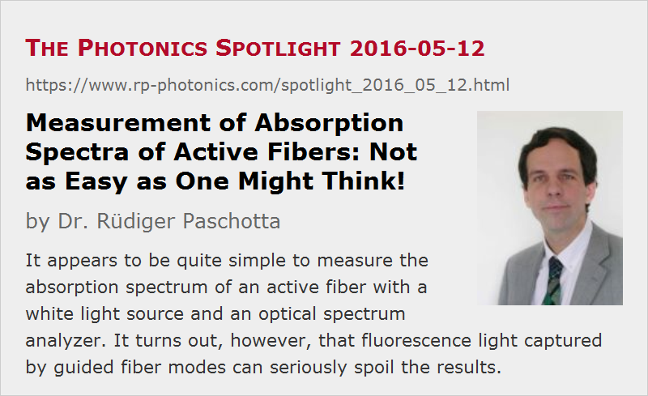

Measurement of Absorption Spectra of Active Fibers: Not as Easy as One Might Think!
Posted on 2016-05-12 as a part of the Photonics Spotlight (available as e-mail newsletter!)
Permanent link: https://www.rp-photonics.com/spotlight_2016_05_12.html
Author: Dr. Rüdiger Paschotta, RP Photonics Consulting GmbH
Abstract: It appears to be quite simple to measure the absorption spectrum of an active fiber with a white light source and an optical spectrum analyzer. It turns out, however, that fluorescence light captured by guided fiber modes can seriously spoil the results.

Rare-earth-doped fibers are mainly used for making fiber amplifiers and fiber lasers. An essential part of their characterization is the measurement of the ground state absorption, i.e., the absorption spectrum of the fiber without a significant excitation of the laser-active ions.
An often used measurement technique is the following. One feeds some broadband light from a white light source into the fiber and analyzes the light coming out from the other end with an optical spectrum analyzer. As the optical spectrum of the launched light is normally not known, one usually uses the so-called cut-back technique: after recording the spectrum, one shortens the fiber by a certain amount and measures the spectrum again. By comparing the two spectra, one can obtain the attenuation of light within the length by which the fiber was shortened.
It is probably quite surprising for most people that the results from that very common method can be seriously spoiled by the following effect. Despite the typically very low optical power launched into the fiber, some laser-active ions are excited and subsequently produce a tiny amount of fluorescence. Some small portion of that light gets into guided fiber modes and can propagate to the spectrum analyzer, thus increasing the amount of registered optical power.
One might think that this effect is negligible, because each absorbed photon can typically produce only one photon of fluorescence light, and that photon can in most cases not find its way to the detector. With that reasoning, however, one does not only overlook that in cases with strong absorption we are quite sensitive to additional registered optical powers – even at levels far below the incident power. More importantly, the mentioned excitation of laser-active ions can be caused not only by input light in a narrow spectral bin corresponding to some specific part of the absorption spectrum, but from an often far wider spectral region according to the bandwidth of the input light. It turns out that the input bandwidth is indeed a crucial parameter, while the detection bandwidth (i.e., the spectral resolution of the spectrum analyzer) is not: reducing the latter, one does reduce the amount of captured fluorescence light, but to the same extent one reduces the amount of the wanted light, effectively not reducing the problem.
Investigation with a Computer Model
I was made aware of this issue by the team of Prof. Johan Nilsson at the Optoelectronics Research Centre (ORC) at the University of Southampton (where I had spent a very nice and fruitful time as a post-doc in the 1990s). We then started to put together a model, using my software RP Fiber Power, beginning with the simple case of an ytterbium-doped single-mode fiber. This turned out to be quite simple:
- We use some number of “optical channels” corresponding to the wavelength bins of the optical spectrum analyzer – for example, width a spectral width of 1 nm.
- Each optical channel obtains some small input power according to the white light input.
- The optical channels are defined as “ASE channels”, so that not only the absorption or optical gain is taken into account, but also the fluorescence into the corresponding modes. Although we of course do not have any positive net gain for the typical situation with a very low input power, and consequently no amplified spontaneous emission (ASE), this type of model is fully adequate for analyzing such a situation.
- For each optical channel, the resulting output power is calculated, and from that the apparent absorption of the fiber in dB/m.
For simplicity, the same intensity mode profile has been used for the whole wavelength region; to be more precise, one could use calculated fiber modes, having somewhat larger profiles for longer wavelengths, so that the mode overlap factor becomes wavelength-dependent.
Figure 1 shows the calculated optical spectrum at the fiber output. For comparison, the same spectrum has been calculated with the upper-state lifetime of the ytterbium ions set to zero, so that the fluorescence is totally quenched. One can see that there is a serious discrepancy between these results at the strong absorption peak around 975 nm, whereas the fluorescence effect is negligible at other wavelengths:
Figure 2 shows the absorption spectra calculated from that, of course exhibiting the same discrepancy around 975 nm:
It is clear why the fluorescence is most disturbing at wavelengths where the absorption of the fiber is very high: there, the transmitted optical power to be measured is very low, so that even small amounts of fluorescent light can spoil the results. Well, one might think that as the fluorescence light is also strongly absorbed in the fiber, it should also become very weak towards the fiber end. Note, however, that there is also input light at other wavelengths, which experiences much lower absorption; that light can still be absorbed close to the fiber end and generate fluorescence light there. This is easily calculated with the model (see Figure 3), whereas you could hardly find this out with a measurement.
Additional aspects come into play for multimode fibers. Here, the number of guided modes and their intensity profiles (and thus their overlap with the doped fiber core) can change substantially over the considered wavelength range. This can cause additional features in the apparent absorption spectrum, which would not be seen in the true absorption spectrum. Particularly interesting is the case of double-clad fibers, having a large number of low-loss cladding modes which can capture fluorescent light. For the modeling of such situations, one needs to deal with a large number of modes in the many wavelength bins.
Some first results have been published in a conference paper (Betty Meng Zhang et al., “Fiber absorption measurement errors resulting from re-emission of radiation”, Advanced Solid State Lasers, OSA Technical Digest, paper AM5A.20). More results will probably soon be shown at another conference; a regular journal paper is also planned.
Curiously, I am not aware of any earlier scientific literature addressing this issue. Although the large number of researchers has done such measurements, apparently nobody became aware of this problem, or at least nobody cared to publish about it. In case that we have overlooked something, you are welcome to tell me, and I will update the article accordingly.
How to Fix the Problem?
An interesting question is of course how to avoid the explained problem.
In principle, one could do such measurements with a bandpass filter applied to the input light, so that each measurement is done only with a quite limited bandwidth. With the described model, one can easily test that approach. Unfortunately, it turns out that even when the spectral range is set to 970–980 nm (only 10 nm wide), the error in the peak absorption is still roughly 10 dB. The problem is essentially that even in that narrow wavelength range there is a strong variation of the absorption. So to be sure one should really measure each wavelength bin separately, which effectively leads to a quite different (and probably less practical) measurement method.
Another approach is just to optimize certain parameters. In the example case above, using half the fiber length (i.e., 1 m instead of 2 m) one would already drastically reduce the error; the measured peak absorption would then be only off by 17% instead of more than a factor of 2. Note, however, that it may not always be sufficient to limit the peak absorption to 30 or 40 dB; the problem can also become more severe for multimode fibers and double-clad fibers. Also, the measurement of the weaker absorption at other wavelengths requires a longer fiber; this means that more measurements are needed.
Obviously, it is difficult to guess how large that measurement error will be in certain situations. A solution could be to take measurements with different fiber lengths; the results for some absorption peak can be considered reliable if the two or three measurements with the shortest fiber lengths lead to the same result. However, it is certainly better to have a computer model with which such effects can be quantified very quickly.
This is really a very general finding: for making fast progress in research and development projects on such matters, one really needs a simulation tool. Once a potential problem of this kind has been recognized, it can easily be studied how exactly things work and what is the dependence on certain parameters. With that, one can much better plan the experiments or avoid certain problems right away by choosing suitable parameters. Some people think that they cannot afford using such a thing; apparently, however, they can afford to waste time and resources by fishing in the dark.
This article is a posting of the Photonics Spotlight, authored by Dr. Rüdiger Paschotta. You may link to this page and cite it, because its location is permanent. See also the RP Photonics Encyclopedia.
Note that you can also receive the articles in the form of a newsletter or with an RSS feed.
Questions and Comments from Users
Here you can submit questions and comments. As far as they get accepted by the author, they will appear above this paragraph together with the author’s answer. The author will decide on acceptance based on certain criteria. Essentially, the issue must be of sufficiently broad interest.
Please do not enter personal data here; we would otherwise delete it soon. (See also our privacy declaration.) If you wish to receive personal feedback or consultancy from the author, please contact him e.g. via e-mail.
By submitting the information, you give your consent to the potential publication of your inputs on our website according to our rules. (If you later retract your consent, we will delete those inputs.) As your inputs are first reviewed by the author, they may be published with some delay.
|  |
If you like this page, please share the link with your friends and colleagues, e.g. via social media:
These sharing buttons are implemented in a privacy-friendly way!